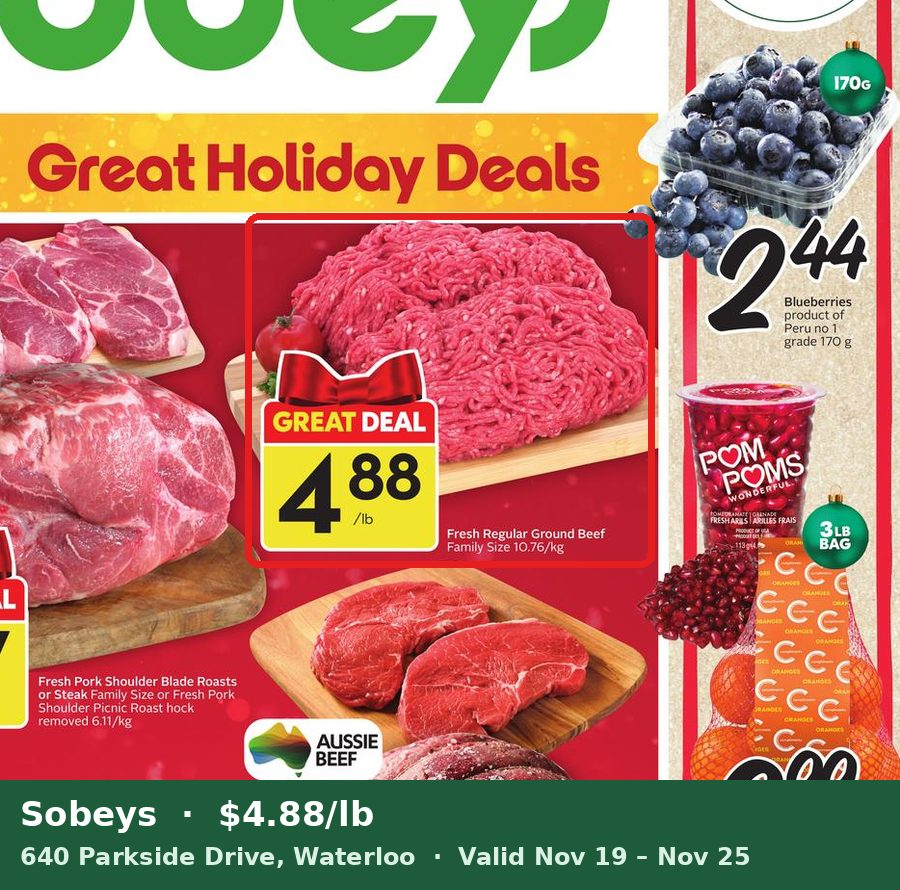
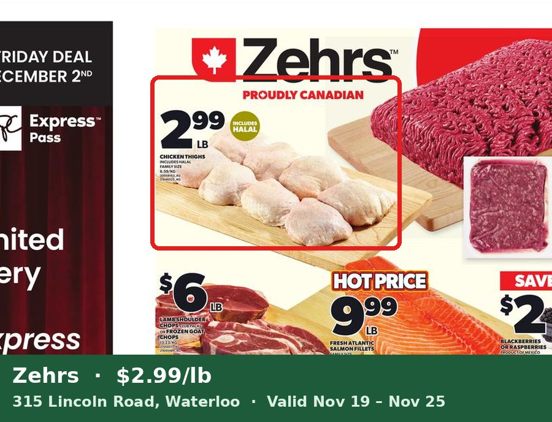
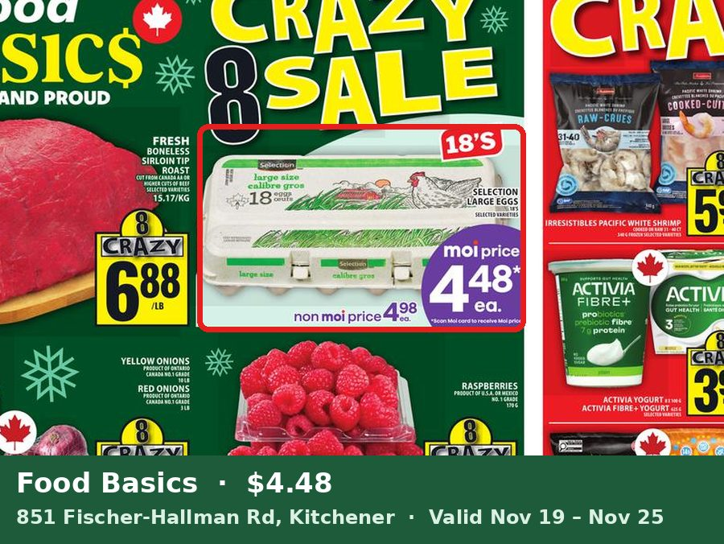
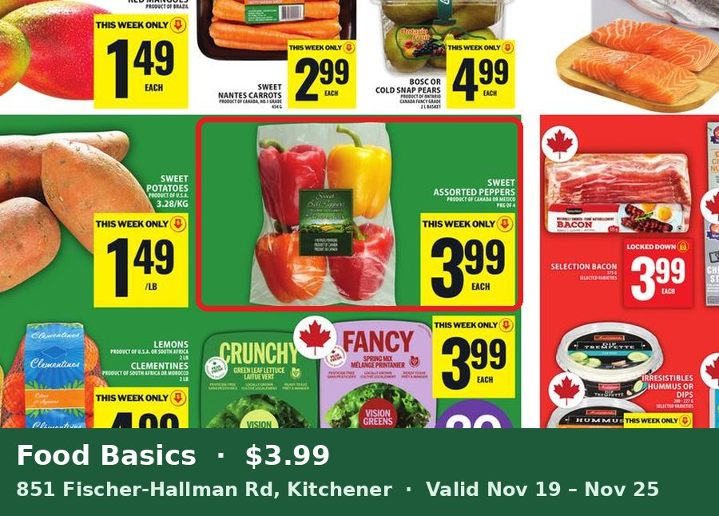
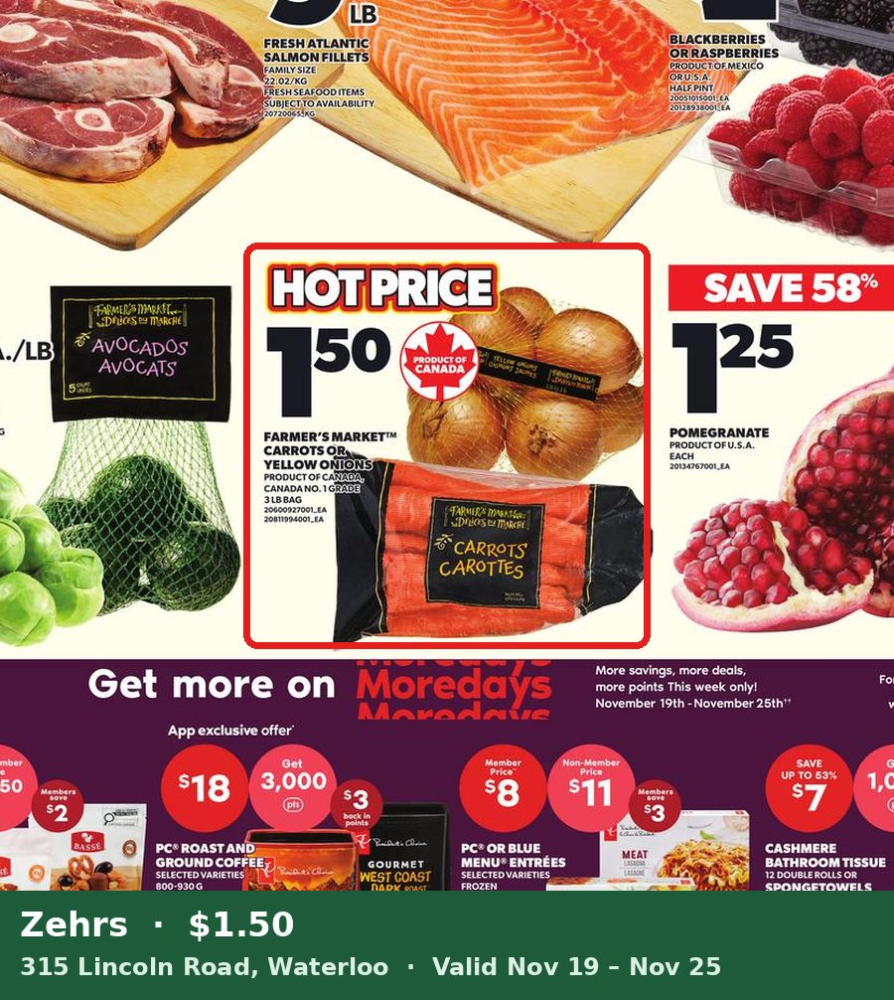
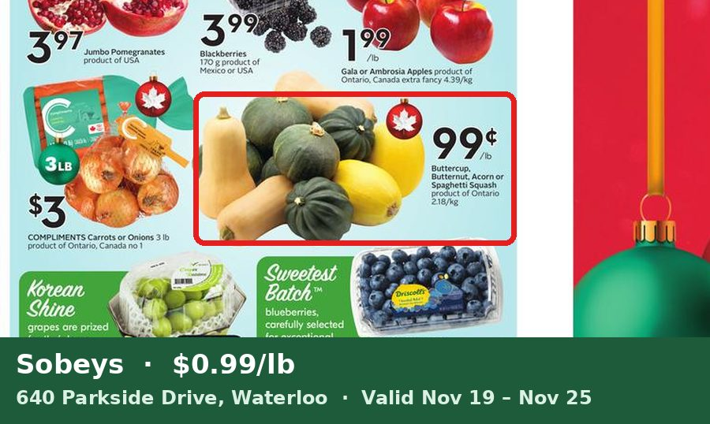
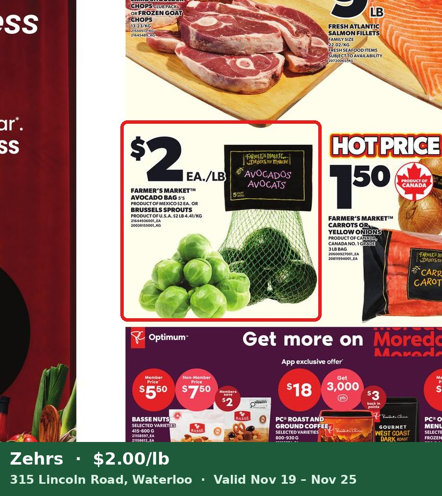
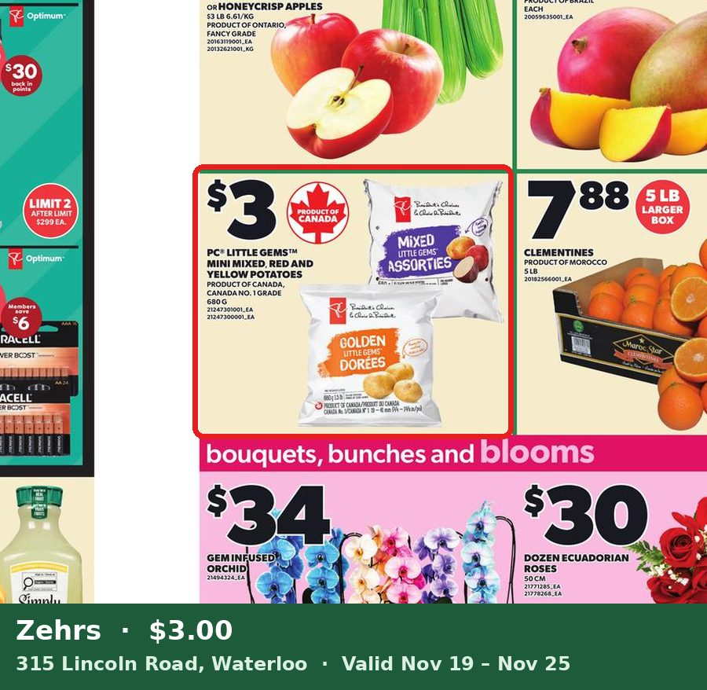
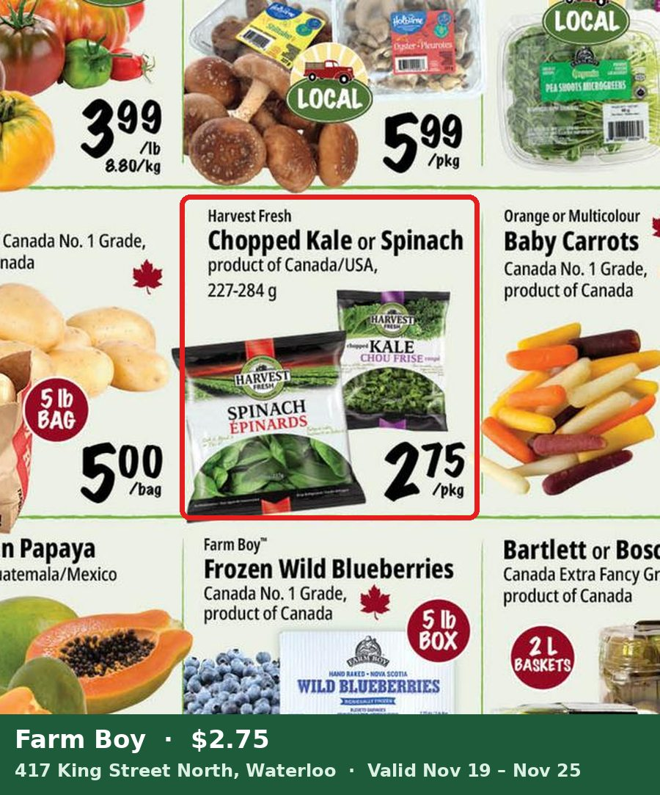
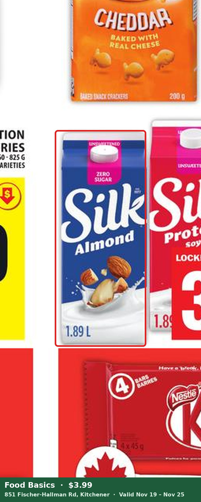

Dinner plan · week of 2026-11-22
Flyers valid Nov 19 – Nov 25 · Shop at No Frills (Paul & Mallory's), 24 Forwell Creek Rd, Waterloo · 6 dinners, gluten-free, ≤45 min
Price matches (11) — show these at the till
Regular ground beef, family size — $4.88/lb at Sobeys Sunday skillet (1 lb) + Thursday stir-fry (1/2 lb). Regular, not lean: drain the fat. Freeze any extra.
640 Parkside Drive, Waterloo

Bone-in chicken thighs, family size — $2.99/lb at Zehrs Wednesday sheet pan (4 thighs). Ad is bone-in; freeze extras.
315 Lincoln Road, Waterloo

Large eggs, 18 pk — $4.48 at Food Basics Weekly staple — breakfast hash. Ad is Food Basics' Selection brand; match depends on No Frills accepting it as comparable (otherwise No Frills 18 pk is $4.99 on sale).
851 Fischer-Hallman Rd, Kitchener

Sweet peppers, pkg of 4 — $3.99 at Food Basics 2 for the skillet, 1 red for the shrimp curry, 3 spare + breakfast hash (2).
851 Fischer-Hallman Rd, Kitchener

Yellow onions, 3 lb bag — $1.50 at Zehrs Skillet, both curries + breakfast hash.
315 Lincoln Road, Waterloo
Carrots, 3 lb bag — $1.50 at Zehrs Wednesday sheet pan + Thursday stir-fry.
315 Lincoln Road, Waterloo

Butternut squash — $0.99/lb at Sobeys Wednesday sheet pan.
640 Parkside Drive, Waterloo

Brussels sprouts — $2.00/lb at Zehrs Wednesday sheet pan.
315 Lincoln Road, Waterloo

PC Little Gems mini potatoes, 680 g — $3.00 at Zehrs Wednesday sheet pan + Friday salmon.
315 Lincoln Road, Waterloo

Chopped spinach, 227–284 g — $2.75 at Farm Boy Monday curry. Ad is Harvest Fresh (Farm Boy); match depends on No Frills carrying it, otherwise buy No Frills baby spinach.
417 King Street North, Waterloo

Silk Almond unsweetened (zero sugar), 1.89 L — $3.99 at Food Basics Weekly staple. Ad is Silk brand; match depends on No Frills carrying it.
851 Fischer-Hallman Rd, Kitchener

Grocery list — est. $91.92
Proteins
$4.88/lb
$7.32
$7.32
$2.99/lb
$5.98
$5.98
$6.50
$6.50
$6.50
$9.99/lb
$7.49
$7.49
~$5.99
$5.99
$5.99
$4.48
$4.48
$4.48
Produce
$3.99
$7.98
$7.98
$1.50
$1.50
$1.50
$1.50
$1.50
$1.50
$0.99/lb
$0.99
$0.99
$0.99/lb
$1.98
$1.98
$2.00/lb
$1.50
$1.50
$3.00
$3.00
$3.00
$2.75
$2.75
$2.75
$0.99
$0.99
$0.99
$2.49
$2.49
$2.49
~$0.50
$0.50
$0.50
~$0.50 ea
$1.00
$1.00
~$0.89
$0.89
$0.89
$0.99
$0.99
$0.99
~$1.29
$1.29
$1.29
Pantry
$1.49
$1.49
$1.49
~$2.29 ea
$4.58
$4.58
~$1.99
$1.99
$1.99
~$1.79
$1.79
$1.79
~$2.99
$2.99
$2.99
~$3.99
$3.99
$3.99
$3.99
$3.99
$3.99
~$3.99
$3.99
$3.99
Estimated total$91.92
Check the pantry: Rice · GF tamari · Toasted sesame oil · Cornstarch · Honey · Pure maple syrup · Dijon mustard (check GF) · Balsamic vinegar (check GF) · Tomato paste · Garlic · Curry powder (check GF) · Cumin, coriander, turmeric, paprika, cinnamon · Italian seasoning (check GF) · Dried oregano, thyme, basil, rosemary · Red pepper flakes · Olive oil · Vegetable oil
Dinners
Sun Nov 22 · 30 min · Two Peas & Their Pod
Stuffed pepper skillet (unstuffed peppers)Use a GF-labelled beef broth and swap the Worcestershire for 2 tsp GF tamari (Canadian Lea & Perrins uses malt vinegar). Check the Italian seasoning and shredded cheese labels. Use 1 lb of the ground beef; full recipe = dinner + 2 lunches.
Mon Nov 23 · 35 min · Kitchen Sanctuary
Chickpea & sweet potato curryNaturally GF and vegetarian; check the curry powder label. Halve it: 1 large sweet potato, 1/2 of the 796 ml chickpeas, 1 can tomatoes, 1 can coconut milk (keep the rest for leftovers/lunch). Serve over rice.
Tue Nov 24 · 20 min · The Almond Eater
Coconut curry shrimpSubstitute GF tamari for the soy sauce (the recipe's own GF swap) and check the red curry paste label (Thai Kitchen is GF). Use the 300 g shrimp (~2/3 recipe) and 1/2 yellow onion instead of the shallot. Serve over rice with lime.
Wed Nov 25 · 40 min · Damn Delicious
One-pan roasted chicken with fall vegetablesGF as written (check the balsamic label). Halve it: 4 bone-in thighs, ~1/2 lb each squash, mini potatoes, carrots and Brussels sprouts. About 10 min prep + 25–30 min roast at 400°F + 2 min broil.
Thu Nov 26 · 25 min · Skinnytaste
Beef & cabbage stir-frySubstitute GF tamari for the soy and dark soy sauces, use GF hoisin/oyster sauce or replace both with 1 tsp honey + 1 extra tsp tamari, and use water instead of broth. Halve it (1/2 lb beef). Green cabbage works in place of napa. Serve over rice.
Fri Nov 27 · 30 min · Primavera Kitchen
Maple mustard salmonNaturally GF; check the Dijon label. Use 2 fillets (~3/4 lb) and halve the glaze; dried thyme is fine. Roast the rest of the mini potatoes and the broccoli alongside at 400°F.
Estimates assume 2 servings per dinner. Price matches are at staff discretion and need the same item/size. Check labels on sauces, spices and broths for gluten.